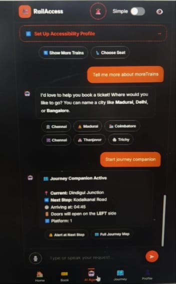

Full-stack web application
Bus Booking System
A full-stack reservation portal built with Python and Flask, implementing intercity route discovery, an interactive 2D seat selector, simulated transaction workflows, and ticket issuance.
Project Motivation & Goals
This project was developed as an exploratory application to understand real-world reservation mechanics, transactional state consistency, and seat-locking patterns in transport platforms.
The primary engineering objective was designing an intuitive user experience that guides passengers from route searching to seat selection, checkout simulation, and immediate ticket retrieval.
Architecture & State Management
The application is built on Python's Flask framework with server-side template rendering and client-side JavaScript enhancements:
- Server Routing & Business Logic: Flask handles endpoints for origin-destination searching, bus catalog lookups, seat availability queries, and passenger detail submission.
- Interactive Seat Layout: Built with JavaScript and CSS Grid to represent the physical layout of the bus coach. Users can toggle open seats, review selected seat numbers, and see occupied seats locked in real time.
- Database & Transaction Flow: Uses SQLite for persisting bus routes, timetables, and historical bookings. Active session booking state is validated server-side during checkout to prevent double-booking of selected seats.
- Simulated Payment & Ticket Generation: Implements a simulated payment gateway flow demonstrating checkout confirmation, booking reference assignment, and downloadable ticket summaries.
Key Features
- Route & Schedule Search: Query bus departures by origin city, destination, and travel date.
- Interactive Seat Selection: Real-time visual representation of window, aisle, and reserved seats.
- Passenger Information Form: Validation for passenger names, contact numbers, and seating assignments.
- Payment Simulation: Step-by-step mock checkout with immediate payment status confirmation.
- Ticket Confirmation & Management: Detailed ticket summary screen with downloadable receipts and cancellation options.
Technology Stack
Python · Flask · HTML · CSS · JavaScript · SQLite
Project Gallery


